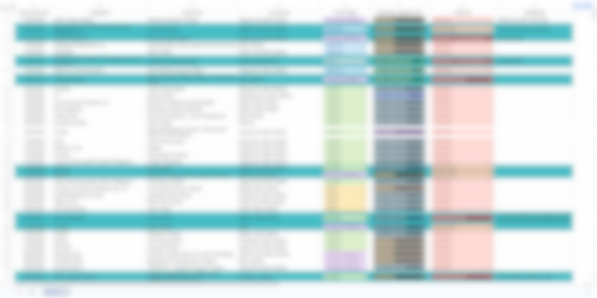
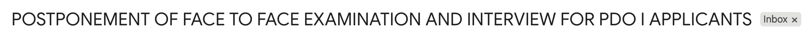
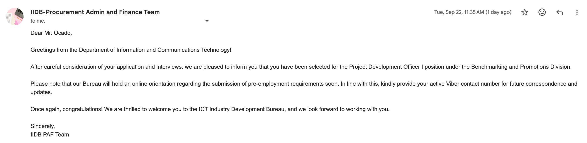

The Fresh Grad Reality Check
How nearly 200 applications, one 4 AM bus ride, and a whole lot of doomscrolling led to my first job.
I am a recent Bachelor of Science in Mathematics graduate from Southern Luzon State University. I finished Cum Laude , served as a DOST-SEI JLSS scholar, and passed my Career Service Professional exam during my third year of college. Naturally, looking at paper, I thought to myself: "Finding a job is going to be a breeze."
I was so wrong.
Graduating with good academic standing doesn’t automatically grant you a VIP pass to the companies you want. It gets your foot in the door, sure, but you are competing against hundreds of people with the exact same standing—or better. I quickly realized that landing a job isn't just about how good your grades are; it’s about how well you can actually stand out in a sea of equally qualified applicants.
The Numbers Game
I started sending out applications a month before my June 23rd graduation. I treated applying like a full-time job. I built a massive spreadsheet to track every submission, creating different versions of my resume tailored to specific fields and job descriptions.
Out of nearly 200 applications, here is what my reality looked like:
- ~180 applications: Complete radio silence. Ghosted. Or occasionally, an automated "Thanks for applying!" email.
- 5 applications: Straight-up rejection emails.
- 10 applications: Initial phone screenings or interview invites.
Out of those 10 interviews, I voluntarily withdrew from five because the roles ended up being entirely unrelated to my actual career goals (a byproduct of applying to basically everything I was remotely qualified for). For the remaining five, the irony of job hunting really set in.
The three roles I felt incredibly confident about? They ghosted me after the interviews. The two roles I didn't take very seriously and attended just for the practice? They both gave me job offers.
I ended up declining both. As an intern at a national government agency, I knew there were entry-level roles offering ₱30,000+. The private offers I received were around ₱24,300 to ₱25,000. While objectively not bad for a fresh graduate, I wanted to hold out for my target salary. I learned a hard lesson during this phase: many private companies that do offer ₱30k+ for entry-level roles often reserve those spots for graduates from top-tier universities, or for applicants with strong industry connections. I had neither.

The Doomscroll That Changed Everything
By early June, I had stopped applying entirely. I figured I had cast a wide enough net and decided to just wait for July to see if anything bit. My days devolved into endless doomscrolling on TikTok and Facebook.
One afternoon, while passively scrolling through a Facebook page dedicated to government job vacancies, a post caught my eye. The Department of Information and Communications Technology (DICT) was looking for a Project Development Officer I. The qualifications perfectly matched my background, and the deadline was literally the next day. I threw my resume into the ring at the last minute and went right back to scrolling.
July arrived, and so did the DICT invitation for an initial interview. I passed, and they scheduled me for an in-person exam and a follow-up interview in late July at their central office.
The 4 AM Commute
Living in Quezon Province, a face-to-face interview in Quezon City meant leaving my house at 4:00 AM. I made the long bus ride, arrived at the DICT office, and sat down to check my phone.
There was an email sitting in my inbox, sent at 8:00 AM while I was on the highway. The in-person exam and interview had been postponed and shifted to an online format. Since I was already physically standing in their office, miles away from home, they gracefully allowed me to take the exam and do the interview right then and there.
I aced it. The interviewer specifically noted that my biggest edge over the other candidates was my deep knowledge of their internal programs and initiatives—a subject I had frantically researched and crammed on my phone during the bus ride.

The Final Boss (And the UP Magna Cum Laude)
HR told me I was in the top three for my batch. I spent the entirety of August waiting in agonizing silence, fully expecting the next email to be a job offer. That silence is actually what motivated me to code this very portfolio—I realized that if I was going to jump back into the job market, I needed an undeniable edge to prove my technical skills.
In early September, the email finally came. But it wasn't an acceptance letter—it was an invitation for a final selection panel. Another interview.
Looking at the calendar invite, I saw there were five of us listed. Since I knew who my original competitors were, I quickly realized none of them were on this list. It dawned on me: there must have been multiple batches, and I was looking at the sole survivors from each one. Naturally, curiosity got the better of me, and I did what no applicant should ever do: I stalked my new competition on LinkedIn.
One of them was a Magna Cum Laude from the University of the Philippines. Immediate panic set in. I questioned my skills, my resume, and my right to even be in the same digital waiting room.
When the scheduled date arrived, only three of us were on the final roster—I can only assume the other two either didn't confirm or withdrew. I definitely celebrated that small victory! But it was still down to three of us, and the UP graduate was going first.
When it was finally my turn to enter the Google Meet, the very first thing I heard through the hot mic as I connected was the assistant supervisor praising her: "Masaya siya, 'no?" (She was great, wasn't she?)
As an introvert, hearing the panel explicitly praise the candidate right before me shattered my remaining nerves. I stuttered. I lost my train of thought. By the time I logged off, I felt completely defeated. I was certain I had lost the job.
Over the next two weeks, I fully pivoted back to the private sector. I started securing interviews with top-tier companies, and my confidence slowly began to repair itself.
Then, on September 22nd, an email popped into my inbox from the DICT. I was selected for the role.
I immediately withdrew all my other ongoing applications. Against the odds, the burnout, and the fierce competition, I had landed my first job.

My Takeaways for Fellow Fresh Grads
If you are currently in the job-hunting trenches, here is what I learned the hard way:
- Do not stalk your competition. It will only feed your impostor syndrome. Focus entirely on what you bring to the table.
- Build a portfolio. A degree proves you can study, but a tangible portfolio proves you can execute . Building this site kept me sane during the waiting period and gave me a massive structural advantage.
- Cramming works, if you do it strategically. Researching the company's specific pain points and programs on the bus ride directly won me my technical interview. Always know who you are talking to.
- Rejection is redirection. Getting ghosted by the jobs I thought I wanted left the door open for the job I actually needed.
The job hunt is brutal, humbling, and exhausting. But it only takes one "Yes" to make the two hundred "No's" completely irrelevant. Keep going.